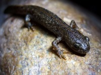
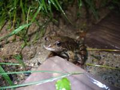
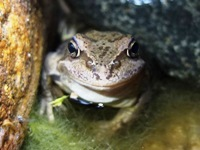
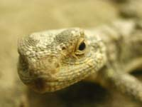
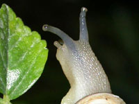
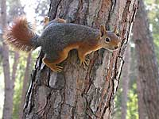

Ящерица, змея и олень сфотографированы в зоопарке. Крыса - у нас дома. Кошка и улитка - на улице.
 Тритон
 Лягушонок
 Лягушонок в пруду
 Круглоголовка
Держит сыр руками
Разноцветные глаза
 Ночь
"И я тебя вижу"
 Орех, или убегу!
Вожак оленей
Птицы